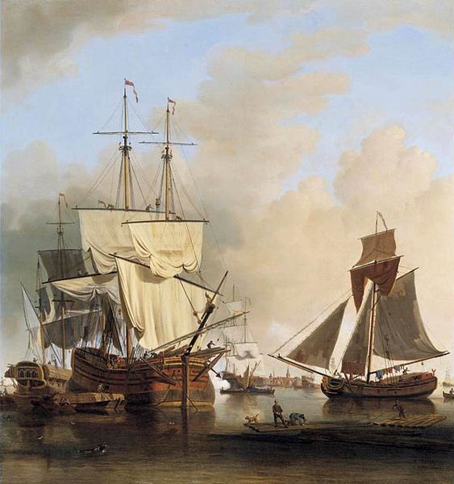
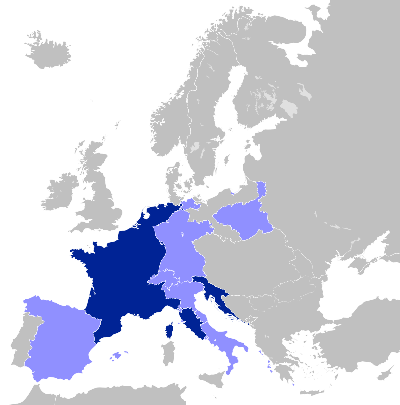
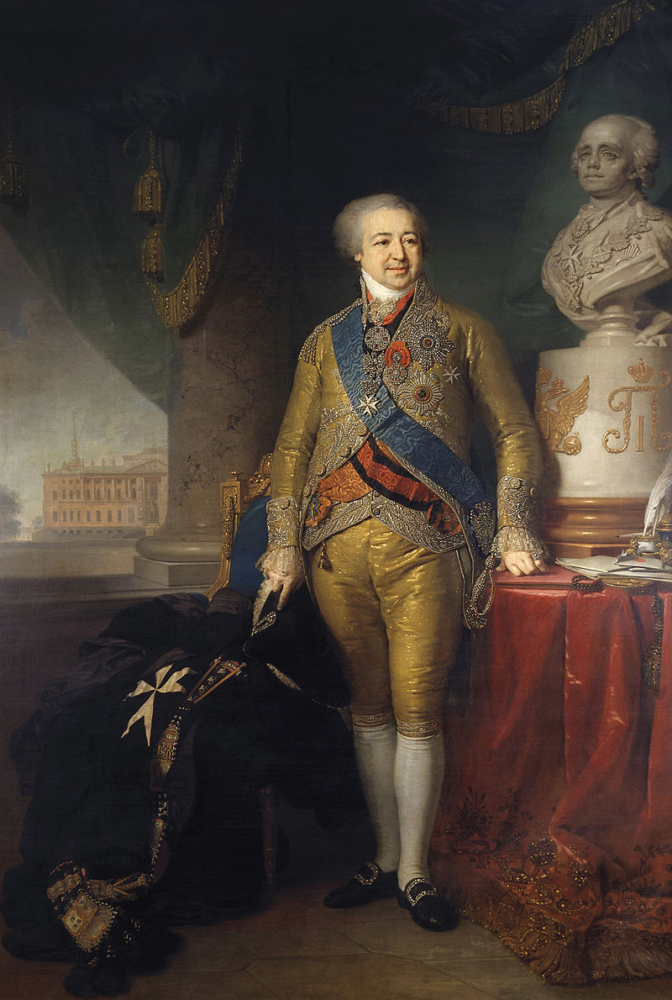
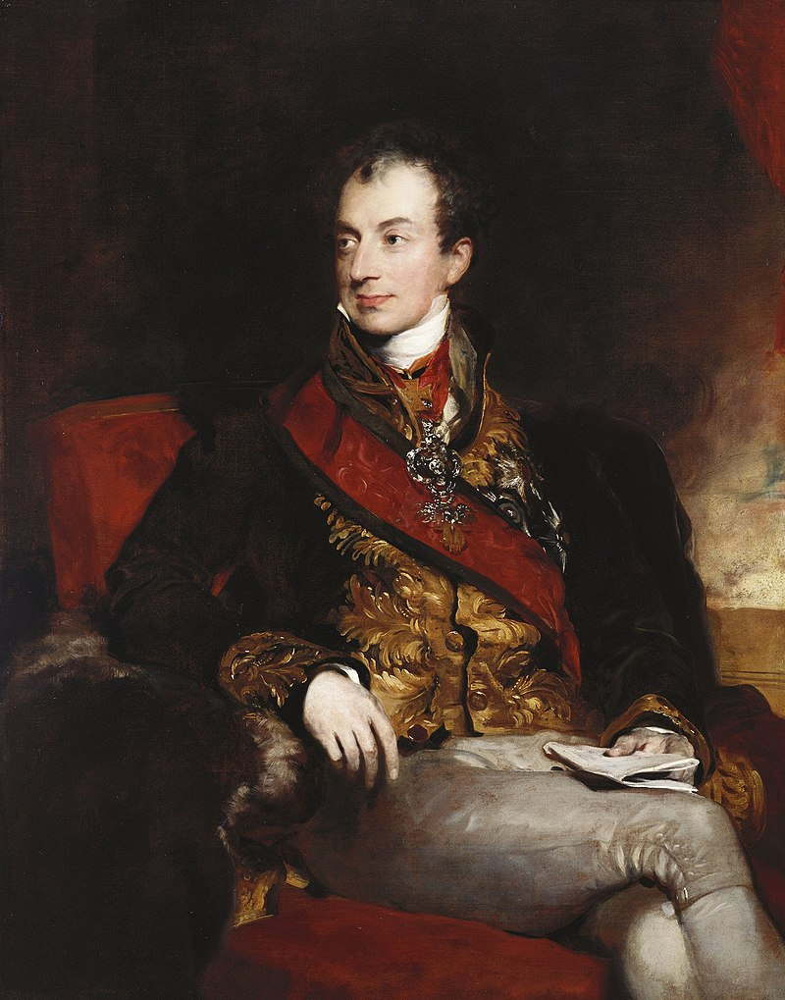

가짜 뉴스, 전쟁을 일으키다 - 1810년 12월 31일 짜르의 칙령
게시: 2019-01-28T06:30:00+09:00
1810년은 나폴레옹에게 있어 드물게 조용한 한 해라고 할 수 있었습니다. 스페인과 포르투갈 등지에서는 계속 피비린내 나는 전투가 이어지기는 했습니다만, 1809년 바그람 전투 이후 나폴레옹 본인이 직접 뛰어들 만큼 큰 전쟁은 없었지요. 그리고 1810년은 그의 제국이 최대 규모로 팽창했던 시기였습니다. 네덜란드와 북부 독일 공국들을 병합하여 프랑스의 영토가 사상 최대의 크기로 늘어난 것이지요. 게다가 유서깊은 합스부르크 왕가와 혼인을 맺고 정권의 영속성을 위한 아들까지 얻었으니, 정말 1810년은 나폴레옹에게 절정기라고 할 수 있었습니다.
게다가 그의 숙적 영국과의 전쟁도 매우 잘 흘러가고 있었습니다. 웰링턴을 스페인에서 몰아낸 것에 이어 마세나가 영국의 발판인 포르투갈까지 침공해들어갔고 (물론 이는 결국 실패로 끝납니다), 무엇보다 더 중요한 싸움인 대륙 봉쇄령으로 인한 영국의 곤경이 슬슬 한계를 보이고 있었습니다. 영국의 곡물 가격은 대륙 봉쇄령 이후 60%나 치솟았고 이로 인해 영국 국민들의 불만이 점점 커지고 있었습니다. 대륙 봉쇄령에도 불구하고 수출은 표면적으로는 잘 되고 있었습니다. 1805년 5110만 파운드이던 수출액이 1808년에는 4970만으로 떨어지더니 1810년에는 다시 6220만 파운드로 늘어났거든요. 이는 유럽 대륙으로의 수출이 막히자 아메리카 대륙으로의 수출을 크게 늘렸기 때문이었습니다. 또한 밀수 등을 통해 여전히 유럽에도 많은 상품을 팔고 있었지요. 그러나 1810년 중순 이후 나폴레옹의 밀수 단속이 강화된데다, 아메리카 대륙으로의 수출 특성상 대금의 상당 부분을 현금 대신 원자재나 채권을 받아야 했던 것이 문제를 일으키고 있었습니다. 들어오는 돈은 부족한데 유럽 대륙의 전쟁 자금은 금화나 은화로 된 경화로 지급해야 했으니, 아무리 영국이 부자 나라라고 해도 돈이 마를 수 밖에 없었습니다. 가령 1809년 한 해에만 무려 4420만 파운드를 전비로 지출해야 했으니까요. 결국 의심쩍은 지폐만 넘쳐날 뿐 경화가 부족해지자 영국에서는 극심한 인플레가 발생했고, 이로 인해 사재기가 발생하여 더욱 물가가 오르는 악순환에 빠진데다, 금본위제 재도입에 대한 목소리가 커지면서 은행들도 재무 안정성에 문제가 생기기 시작했습니다. 이런 문제로 인해 1811년에는 금융 불안정과 함께 수출액도 4390만 파운드로 뚝 떨어져 버렸습니다. 유럽 대륙도 힘들기는 마찬가지였으나, 당시 영국처럼 산업과 금융이 발달한 나라가 없었으니, 그 타격은 당연히 영국이 가장 크게 입었습니다.

('템즈 강에서의 선적'이라는 Samuel Scott의 그림입니다.)
그런데 이렇게 나폴레옹에게 승기가 막 보이려는 시기인 1810년 마지막 날, 이 모든 것의 방향을 확 돌려놓는 사건이 벌어집니다. 1810년 12월 31일 러시아의 짜르 알렉산드르 1세의 칙령이 발표되었는데, 그 내용은 영국과의 공공연한 무역 재개 및 나폴레옹에 대한 사실상의 도전장이었거든요. 대체 뭐가 어떻게 된 일이었을까요 ?
이미 다룬 내용입니다만, 기억 전환을 위해 잠깐 정리를 해보면 이렇습니다. 나폴레옹은 스페인의 정복을 위해서는 영국을 먼저 굴복시켜야 한다고 나름 정확하게 판단했습니다. 그러나 영국의 상품들은 무시하기에는 너무나 큰 유혹인지라 유럽 각국은 대륙 봉쇄령을 위반하고 밀수를 계속 했습니다. 나폴레옹의 동생 루이가 다스리는 네덜란드도 마찬가지였고, 심지어 나폴레옹 본인도 '면허제'라는 이름 하에 몇몇 상인들에게 영국 상품을 공식적으로 수입할 수 있도록 해줄 정도였습니다. 이래서는 안 되겠다고 판단한 나폴레옹은 대륙 봉쇄령을 더욱 강력하게 추진하기 위해 유럽의 주요 해안가를 아예 프랑스 영토로 병합해버렸습니다. 그것이 네덜란드 및 발트해에 면한 함부르크(Hamburg), 브레멘(Bremen), 뤼벡(Lubeck) 등 북서부 독일 소공국들의 병합이었습니다. 이 조치로 인해 프랑스의 영토는 사상 최대로 확장되었고, 영국의 재정난이 더 심해지기는 했습니다. 문제는 대륙 봉쇄령의 이런 강압적인 실행은 영국 뿐만 아니라 동맹국들의 고통도 증가시켰을 뿐만 아니라, 결정적으로 동맹국들의 불신과 반발심도 키웠다는 것이었습니다. 특히, 나폴레옹이 알렉산드르의 체면을 무시하고, 알렉산드르가 가장 아끼는 누이동생 예카테리나의 남편이 다스리는 올덴부르크(Oldenburg) 공국까지 병합해버린 것은 당시 유럽 대륙의 양대 세력 프랑스와 러시아 사이에 싸늘한 적대감을 키우기에 충분한 일이었습니다.

(아, 프랑스가 이토록 크고 아름다운 적이 있었던가 ??)
나폴레옹의 관점에서 이런 병합은 프랑스와 러시아의 공동의 적국인 영국을 제압하기 위해서는 어쩔 수 없는 일이었습니다. 또 나폴레옹은 올덴부르크의 병합에 대한 충분한 보상도 제시했습니다. 즉, 2년 전 알렉산드르와 아름다운 우정을 쌓았던 회담 장소였던 에르푸르트(Erfurt)를 보상으로 제시했던 것입니다. 그러나 이를 '이거나 먹고 떨어지라'는 모욕으로 받아들인 알렉산드르는 나폴레옹의 보상안을 거부했고, 1810년 12월 31일 러시아 황제 칙령(ukase)으로 대응했습니다. 이 칙령은 어쩌면 사소할 수 있는 내용으로서, 크게 2가지를 담고 있었습니다.
1) 프랑스산 비단과 와인에 높은 관세를 부과
2) 중립국 선박의 상품이 "명확히" 영국산이 아닌 경우 러시아 항구에 입항 허용
이는 대표적인 프랑스 상품을 배척하는 것일 뿐만 아니라 영국 상품에 대해 환영하는 초대장을 보낸 것이나 다름없었습니다. 그냥 허술하게라도 가짜 서류만 만들어 제출하면 되었으니까요. 아는 나폴레옹의 패권에 대한 공개적인 도전장이었고 이는 전쟁을 일으키기에 충분한 도발이었습니다. 나폴레옹이 자의식 과잉으로 똘똘 뭉친 인간이라는 것을 알렉산드르도 잘 알고 있었을 텐데, 아무리 여동생이 가엾다고 해도 왜 이렇게까지 극단적인 방법을 택했을까요 ?
당연히 그런 결정까지는 크고 작은 많은 다른 요소들이 관여했습니다만, 가장 큰 것은 역시 폴란드와 영국이었습니다.
서방 진출을 국가 정책으로 삼는 러시아에게 있어 폴란드는 서쪽에 확보한 소중한 발판이었습니다. 그런 상황에서 바르샤바 공국은, 아무리 독립국이 아니라 작센 왕의 개인 영지 형태로 만들어진 것이라고 해도, 러시아에게 눈엣가시 같은 것이었습니다. 비록 조그마한 공국에 불과할지라도 폴란드인들의 독립 정권이 있다는 것은 러시아령 폴란드인들에게 독립의 열망을 불러일으킬 수 있었으니까요. 특히 1809년 제5차 대불동맹전쟁시 바르샤바 공국이 오스트리아의 침공에 맞서 꽤 선전했을 뿐만 아니라 바그람 전투의 결과 더 넓은 영토를 갖게 되었다는 것은 혹시라도 폴란드가 정식으로 독립 왕국으로 일어날지도 모른다는 불안감을 러시아에게 주었습니다.
러시아의 이런 불안감은 오스트리아의 메테르니히가 영리하게도 부지런히 조장했습니다. 유능한 외교관이었던 메테르니히는 러시아와 프랑스 사이를 비밀리에 이간질하기 위해 총력을 기울이고 있었는데, 그 목표는 흔히 생각하는 것처럼 나폴레옹의 패망이 아니라 오스만 투르크 때문이었습니다. 오스만 투르크와 국경을 접한 오스트리아 합스부르크 제국은 당시 유럽의 병자로 불리던 오스만 투르크의 발칸 반도를 빼앗고 싶어 했는데, 그 강력한 경쟁자가 러시아였던 것입니다. 그런 상황에서 러시아와 프랑스가 동맹 관계라면 오스트리아에게 유리할 것이 없다고 생각한 메테르니히는 나폴레옹과 알렉산드르 사이의 맹약인 틸지트(Tilsit) 조약을 깨뜨리는 것을 1차 목표로 삼았고, 이를 위해서 폴란드를 수단으로 정했습니다. 즉, '나폴레옹이 폴란드를 독립시키려 한다'라는 소문을 빈과 바르샤바에 꾸준히 퍼뜨린 것입니다. 어떻게 보면 1810년판 가짜 뉴스였던 셈인데, 메테르니히의 비밀 선동에 홀딱 넘어간 순진한 폴란드인들은 독립 열망에 부풀었고, 바르샤바 신문들은 독립이라는 희망찬 뉴스를 꾸준히 찍어댔습니다. 이런 상황은 빈과 바르샤바에 있던 러시아인들에 의해 그대로 알렉산드르에게 들어갔고, 그의 우려와 분노는 파리 주재 러시아 대사 쿠라킨(Alexander Borisovich Kurakin, Александр Борисович Куракин)을 통해 나폴레옹에게 전달되었습니다.

(화려한 옷차림으로 파리 사교계를 사로잡아 '다이아몬드 대공'으로 불렸던 쿠라킨 대사입니다. 그는 음식이 한꺼번에 나오지 않고 코스별로 차례차례 서빙되는 러시아식 정찬 방식(service à la russe)을 프랑스에 전해 오늘날의 프랑스 코스 요리를 완성시키는데 큰 공헌을 한 분이기도 합니다. 그는 마지막까지 프랑스와 러시아 간의 전쟁을 막아보려 많은 애를 썼습니다.)
나폴레옹은 나폴레옹대로 화를 냈습니다. 나폴레옹이 바로 작년 오스트리아와 힘겨운 전쟁을 벌이고 있었을 때, 틸지트 조약에 따르면 알렉산드르는 즉각 병력을 파견하여 나폴레옹과 함께 오스트리아를 쳐부수어야 했습니다. 그런 편의를 바라고 나폴레옹은 폴란드 애인의 애원도 뿌리치고 폴란드 독립을 막았을 뿐만 아니라 핀란드까지 러시아에게 던져 주었던 것입니다. 그러나 그런 은혜를 모두 잊고 러시아는 교활하게도 러시아령 폴란드 인근에 병력만 배치해두고 어느 쪽이든 승리하는 쪽에 붙기 위해 눈치만 보고 있었을 뿐만 아니라, 바르샤바 공국이 오스트리아군의 공세를 분쇄하자 오스트리아령 폴란드로 침입하기도 했던 것입니다. 이건 황제들끼리 우정을 나눈 동맹국의 처신이 아니었습니다. 그런데 그런 것을 꾹 참고 우방국 대우를 해주었더니 나폴레옹은 전혀 의도하지도 않았던 폴란드 독립에 대해 항의해온다 ? 이런 뻔뻔스럽고 무례한 행동에 대해 공손하게 대응할 나폴레옹이 아니었습니다. 게다가 나폴레옹의 처가집인 오스트리아는 메테르니히의 획책 하에 끊임없이 러시아군의 이동 및 요새 강화에 대해 나폴레옹에게 고자질을 하며 이런 위기를 부추겼습니다.
실제로 나폴레옹과 이런 험악한 메시지를 주고 받으며, 알렉산드르는 각지의 요새를 강화하고 군대를 정비하는 등 전쟁 준비를 시작했습니다. 알렉산드르가 나폴레옹과의 전쟁을 준비하게 된 것은 역시 폴란드 건이 컸습니다. 알렉산드르는 교황을 잡아가둔 나폴레옹의 폭거가 독실한 카톨릭인 폴란드 국민들에게 공분을 샀을 것이라는 희망을 가지고 있었습니다. 그는 좀더 많은 자치권과 좀더 관대한 헌법을 약속하며 폴란드인들에게 18세기때처럼 러시아의 보호국으로 남는 것이 폴란드에게 유리하다는 분위기를 조성하려 했지만, 바르샤바에 그가 심어둔 밀사들은 바르샤바의 분위기를 솔직하게 그대로 전해왔습니다. 폴란드는 나폴레옹이 결국 폴란드에게 자유를 가져올 것이라고 철석같이 믿고 있다는 것이었습니다. 이 보고서를 접한 알렉산드르는 결국 프랑스와의 전쟁을 결국 피할 수 없다고 판단했습니다. 위에서 언급한 대로, 폴란드인들에게 이런 분위기를 만든 것도 역시 메테르니히의 획책이었습니다. 실제로는 나폴레옹은 냄새나는 폴란드인들을 위해 러시아와 전쟁을 할 생각이 전혀 없었습니다.

(오스트리아의 정치가/외교관인 메테르니히(Klemens Wenzel Nepomuk Lothar, Prince von Metternich-Winneburg zu Beilstein)입니다. 가짜 뉴스를 정치 외교에 활용하는데 있어 선구자라고 할 수 있습니다.)
알렉산드르에게 전쟁을 결심하게 만든 것은 폴란드 외에도 또 있었습니다. 어쩌면 이것이 전쟁의 근본 원인이었지요. 그것은 물론 영국, 좀더 정확하게는 영국과의 무역이었습니다. 러시아는 드넓은 평원을 가진 대농업 국가였습니다. 그런 러시아가 홍차와 설탕, 면직물, 비단, 강철 등의 물품을 수입할 돈을 벌 수 있는 방법은 남아도는 자국산 밀과 아마 등의 농산물을 수출하는 것 뿐이었는데, 원래 그 가장 큰 고객이 바로 영국이었습니다. 나폴레옹의 대륙 봉쇄령 때문에 영국과의 교역이 막히자 러시아의 귀족들은 돈줄이 막혔고, 그 불만은 짜르 알렉산드르의 정권을 위태롭게 할 수준까지 이르렀습니다. 알렉산드로서는 그런 불만을 더 이상 무시할 수 없는 상태였는데, 거기에 뻔뻔스럽기 그지 없는 나폴레옹이 여동생 시댁인 올덴부르크를 제멋대로 병합해버리고 (이건 가짜 뉴스에 의한 오해였지만) 폴란드까지 독립시키려는 움직임을 보이자, 더 이상 참을 이유도 여유도 없었습니다. 그래서 마침내 1810년 12월 31일, 그는 나폴레옹의 따귀를 갈기는 것이나 다름없는 칙령을 발표했던 것입니다.
이로 인해, 1811년 4월 2일자 편지에서 나폴레옹은 다음과 같이 말하며 이미 러시아와의 전쟁은 피할 수 없는 상태임을 분명히 했습니다.
"전쟁은 발발할 것이오. 나와 알렉산드르가 아무리 그를 막기 위해 노력하거나 프랑스와 러시아의 국익이 아무리 해를 입는다고 해도 말이오. 난 이런 상황을 자주 보았고, 내 과거 경험에 비추어 볼 때 전쟁이 발발할 거라는 것은 마치 오페라의 줄거리가 펼쳐지는 것과 같이 뻔한 이야기요. 그리고 이 모든 것을 뒤에서 조종하는 것은 바로 영국이오."
이제 나폴레옹의 제국은 몰락을 향한 폭풍 속으로 휘말려들어갑니다.
Source : The Life of Napoleon Bonaparte, by William Milligan Sloane
History of the Expedition to Russia Undertaken by the Emperor Napoleon by Philippe-Paul Comte de Segur
https://www.britannica.com/event/Napoleonic-Wars/The-Continental-System-and-the-blockade-1807-11
https://georgianera.wordpress.com/2015/04/16/the-port-of-london-in-the-18th-century/
https://en.wikipedia.org/wiki/Alexander_Kurakin